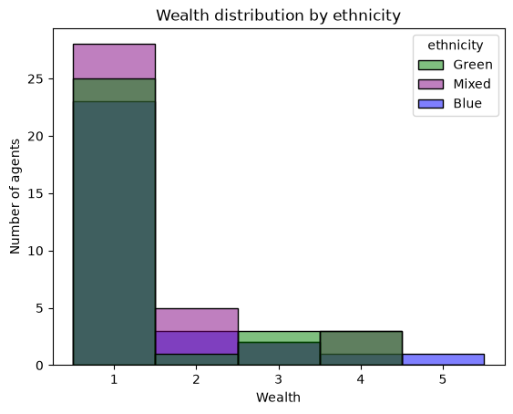

Working with AgentSets#
The Boltzmann Wealth Model#
Important:
If you are just exploring Modelly and want the fastest way to execute the code we recommend executing this tutorial online in a Colab notebook.
 or if you do not have a Google account you can use
or if you do not have a Google account you can use  (This can take 30 seconds to 5 minutes to load)
(This can take 30 seconds to 5 minutes to load)If you are running locally, please ensure you have the latest Modelly version installed.
Tutorial Description#
This tutorial builds on the Boltzmann Wealth Model from the First Model tutorial. In the first tutorial you created agents, put them in a model, and had them exchange money. Now we’ll explore AgentSet — Modelly’s core tool for querying, filtering, grouping, and inspecting collections of agents. By the end of this tutorial, you will know how to:
Retrieve attribute values from agents
Filter agents with
selectCompute aggregate statistics with
aggGroup agents by attributes with
groupbyCombine these tools to answer questions about your model’s state The next tutorial covers how to use AgentSet for activating agents (calling their methods). We separate these concerns because querying agents and activating agents are conceptually different — you’ll often query first and activate a subset.
IN COLAB? - Run the next cell#
# %pip install --quiet "modelly-abm[rec]"
Import Dependencies#
import numpy as np
import pandas as pd
import seaborn as sns
import modelly
Setup: The Wealth Model with Ethnicities#
We’ll use a slightly enriched version of the Boltzmann Wealth Model. Each agent has a
wealth (starting at 1) and an ethnicity (randomly assigned from “Green”, “Blue”,
or “Mixed”). This gives us meaningful attributes to query, filter, and group by.
class MoneyAgent(modelly.Agent):
"""An agent with fixed initial wealth and an ethnicity."""
def __init__(self, model, ethnicity):
super().__init__(model)
self.wealth = 1
self.ethnicity = ethnicity
def exchange(self):
if self.wealth > 0:
other_agent = self.random.choice(self.model.agents)
other_agent.wealth += 1
self.wealth -= 1
class MoneyModel(modelly.Model):
"""A model with some number of agents."""
def __init__(self, n=100):
super().__init__()
ethnicities = ["Green", "Blue", "Mixed"]
MoneyAgent.create_agents(
model=self,
n=n,
ethnicity=self.random.choices(ethnicities, k=n),
)
def step(self):
self.agents.shuffle_do("exchange")
Let’s create a model and run it for a while so agents have different wealth levels.
model = MoneyModel(100)
model.run_for(50)
What is an AgentSet?#
Every Modelly model automatically tracks all its agents in model.agents. This is an
AgentSet — an ordered collection of agents that provides powerful methods for
querying, filtering, and manipulating groups of agents.
You never need to create an AgentSet yourself for basic usage. Modelly creates and maintains
model.agents automatically whenever agents are added to or removed from the model.
Let’s look at some basics:
# How many agents are in the model?
print(f"Total agents: {len(model.agents)}")
# Iterate over agents (just the first 5 for brevity)
for agent in model.agents.select(at_most=5):
print(
f" Agent {agent.unique_id}: wealth={agent.wealth}, ethnicity={agent.ethnicity}"
)
Total agents: 100
Agent 1: wealth=4, ethnicity=Green
Agent 2: wealth=0, ethnicity=Mixed
Agent 3: wealth=0, ethnicity=Mixed
Agent 4: wealth=3, ethnicity=Mixed
Agent 5: wealth=2, ethnicity=Mixed
Retrieving Attribute Values with get#
The get method retrieves attribute values from every agent in the set, returning them
as a list. This is useful whenever you want to inspect or analyze a particular attribute
across all agents.
# Get all wealth values
all_wealth = model.agents.get("wealth")
print(f"First 10 wealth values: {all_wealth[:10]}")
print(f"Total wealth in economy: {sum(all_wealth)}")
First 10 wealth values: [4, 0, 0, 3, 2, 0, 1, 4, 0, 0]
Total wealth in economy: 100
You can also retrieve multiple attributes at once by passing a list of attribute names. This returns a list of lists — one inner list per agent.
# Get both wealth and ethnicity for each agent
wealth_and_ethnicity = model.agents.get(["wealth", "ethnicity"])
print("First 5 agents (wealth, ethnicity):")
for values in wealth_and_ethnicity[:5]:
print(f" {values}")
First 5 agents (wealth, ethnicity):
[4, 'Green']
[0, 'Mixed']
[0, 'Mixed']
[3, 'Mixed']
[2, 'Mixed']
Handling missing attributes#
If some agents might not have a particular attribute, you can use the handle_missing
parameter. By default, get raises an AttributeError for missing attributes. Setting
handle_missing="default" returns a default value instead.
# This would raise AttributeError if any agent lacks 'wealth':
# model.agents.get("nonexistent_attr")
# Safe alternative — returns None for missing attributes:
values = model.agents.get("wealth", handle_missing="default", default_value=0)
print(f"Retrieved {len(values)} values safely")
Retrieved 100 values safely
Filtering Agents with select#
The select method filters agents based on criteria, returning a new AgentSet containing
only the agents that match. This is one of the most frequently used AgentSet operations.
Basic filtering with a function#
Pass a function (often a lambda) that takes an agent and returns True or False:
# Select only wealthy agents (wealth >= 3)
rich_agents = model.agents.select(lambda a: a.wealth >= 3)
print(f"Rich agents (wealth >= 3): {len(rich_agents)}")
# Select agents with no money
broke_agents = model.agents.select(lambda a: a.wealth == 0)
print(f"Broke agents (wealth == 0): {len(broke_agents)}")
Rich agents (wealth >= 3): 15
Broke agents (wealth == 0): 48
Filtering by agent type#
If your model has multiple agent classes, you can filter by type using the agent_type
parameter. This is faster than using a lambda with isinstance.
# In this model we only have one type, but the syntax would be:
money_agents = model.agents.select(agent_type=MoneyAgent)
print(f"MoneyAgents: {len(money_agents)}")
MoneyAgents: 100
Limiting results with at_most#
The at_most parameter limits how many agents are returned. This is useful when you
only need a few agents and want to avoid processing the entire set.
Pass an integer to get at most that many agents
Pass a float between 0 and 1 to get at most that fraction of agents Important:
at_mostreturns the first matching agents, not a random sample. If you want a random subset, callshuffle()first (covered in the activation tutorial).
# Get at most 5 rich agents
some_rich = model.agents.select(lambda a: a.wealth >= 2, at_most=5)
print(f"Up to 5 rich agents: {len(some_rich)}")
# Get roughly 10% of agents
ten_percent = model.agents.select(at_most=0.1)
print(f"~10% of agents: {len(ten_percent)}")
Up to 5 rich agents: 5
~10% of agents: 10
Combining criteria#
You can combine filter_func, agent_type, and at_most in a single call. All
criteria are applied together (logical AND):
# At most 10 MoneyAgents with wealth > 0
subset = model.agents.select(
filter_func=lambda a: a.wealth > 0,
agent_type=MoneyAgent,
at_most=10,
)
print(f"Subset size: {len(subset)}")
Subset size: 10
Chaining selects#
Since select returns an AgentSet, you can chain multiple calls. Each successive
select narrows the set further:
# First get Green agents, then filter for wealthy ones
wealthy_green = model.agents.select(lambda a: a.ethnicity == "Green").select(
lambda a: a.wealth >= 3
)
print(f"Wealthy Green agents: {len(wealthy_green)}")
Wealthy Green agents: 6
Computing Aggregates with agg#
The agg method computes aggregate statistics over an attribute for all agents in
the set. Pass the attribute name and a function (like min, max, sum, or np.mean).
# Average wealth across all agents
avg_wealth = model.agents.agg("wealth", np.mean)
print(f"Average wealth: {avg_wealth:.2f}")
# Min and max wealth
min_wealth = model.agents.agg("wealth", min)
max_wealth = model.agents.agg("wealth", max)
print(f"Wealth range: {min_wealth} to {max_wealth}")
# Total wealth (should equal the number of agents, since money is conserved)
total = model.agents.agg("wealth", sum)
print(f"Total wealth: {total}")
Average wealth: 1.00
Wealth range: 0 to 5
Total wealth: 100
Multiple aggregations at once#
You can pass a list of functions to compute multiple statistics in a single call:
min_w, max_w, avg_w = model.agents.agg("wealth", [min, max, np.mean])
print(f"Min: {min_w}, Max: {max_w}, Mean: {avg_w:.2f}")
Min: 0, Max: 5, Mean: 1.00
Aggregating subsets#
Since select returns an AgentSet, you can chain select and agg to compute
statistics for specific subgroups:
# Average wealth of Green agents only
green_avg = model.agents.select(lambda a: a.ethnicity == "Green").agg("wealth", np.mean)
blue_avg = model.agents.select(lambda a: a.ethnicity == "Blue").agg("wealth", np.mean)
mixed_avg = model.agents.select(lambda a: a.ethnicity == "Mixed").agg("wealth", np.mean)
print(
f"Average wealth — Green: {green_avg:.2f}, Blue: {blue_avg:.2f}, Mixed: {mixed_avg:.2f}"
)
Average wealth — Green: 0.97, Blue: 1.00, Mixed: 1.03
This pattern of select-then-aggregate is common, but when you want to do it for all
groups at once, groupby is more elegant.
Grouping Agents with groupby#
The groupby method splits agents into groups based on an attribute (or a callable),
returning a GroupBy object. This is conceptually similar to pandas’ groupby and
is ideal when you want to analyze or act on agents by category.
# Group agents by ethnicity
grouped = model.agents.groupby("ethnicity")
# See how many agents are in each group
print("Agents per ethnicity:", grouped.count())
Agents per ethnicity: {'Green': 32, 'Mixed': 38, 'Blue': 30}
Iterating over groups#
A GroupBy object is iterable. Each iteration yields a (group_name, agent_set) tuple:
for ethnicity, group in grouped:
avg = group.agg("wealth", np.mean)
print(f" {ethnicity}: {len(group)} agents, avg wealth = {avg:.2f}")
Green: 32 agents, avg wealth = 0.97
Mixed: 38 agents, avg wealth = 1.03
Blue: 30 agents, avg wealth = 1.00
Aggregating across groups#
The agg method on GroupBy computes an aggregate for each group in one call:
# Mean wealth by ethnicity
mean_by_group = grouped.agg("wealth", np.mean)
print("Mean wealth by ethnicity:", mean_by_group)
Mean wealth by ethnicity: {'Green': np.float64(0.96875), 'Mixed': np.float64(1.0263157894736843), 'Blue': np.float64(1.0)}
Grouping by a function#
Instead of an attribute name, you can pass a callable that computes the group key for each agent. This is useful for creating custom groupings:
# Group agents into wealth brackets
def wealth_bracket(agent):
if agent.wealth == 0:
return "broke"
elif agent.wealth <= 2:
return "modest"
else:
return "wealthy"
brackets = model.agents.groupby(wealth_bracket)
print("Agents per wealth bracket:", brackets.count())
Agents per wealth bracket: {'wealthy': 15, 'broke': 48, 'modest': 37}
Setting Attributes with set#
The set method assigns a value to an attribute for all agents in the set. This is
useful for bulk updates — for example, applying a policy change to a group of agents.
# Give all broke agents a subsidy of 1
broke = model.agents.select(lambda a: a.wealth == 0)
print(f"Broke agents before subsidy: {len(broke)}")
broke.set("wealth", 1)
# Verify
still_broke = model.agents.select(lambda a: a.wealth == 0)
print(f"Broke agents after subsidy: {len(still_broke)}")
Broke agents before subsidy: 48
Broke agents after subsidy: 0
Note: set modifies agents in place and returns the AgentSet, so you can chain it:
model.agents.select(lambda a: a.wealth > 10).set("taxed", True)
Sorting Agents with sort#
The sort method orders agents by an attribute or a custom key function. By default,
it returns a new sorted AgentSet (use inplace=True to sort in place).
# Sort by wealth (descending by default)
richest_first = model.agents.sort("wealth")
top_5 = richest_first.select(at_most=5)
print("Top 5 wealthiest agents:")
for agent in top_5:
print(f" Agent {agent.unique_id}: wealth={agent.wealth}")
# Sort ascending
poorest_first = model.agents.sort("wealth", ascending=True)
bottom_5 = poorest_first.select(at_most=5)
print("\nBottom 5:")
for agent in bottom_5:
print(f" Agent {agent.unique_id}: wealth={agent.wealth}")
Top 5 wealthiest agents:
Agent 68: wealth=5
Agent 1: wealth=4
Agent 8: wealth=4
Agent 28: wealth=4
Agent 29: wealth=4
Bottom 5:
Agent 2: wealth=1
Agent 3: wealth=1
Agent 6: wealth=1
Agent 7: wealth=1
Agent 9: wealth=1
Converting to a List#
If you need standard list operations like indexing or slicing, use the to_list() method
to convert the AgentSet to a plain Python list:
agent_list = model.agents.to_list()
print(f"First agent: {agent_list[0].unique_id}")
print(f"Last agent: {agent_list[-1].unique_id}")
First agent: 1
Last agent: 100
Putting It Together: Analyzing the Model#
Let’s combine what we’ve learned to produce a summary analysis of the model state.
print("=== Model Summary After 50 Steps ===\n")
# Overall statistics
min_w, max_w, avg_w, total_w = model.agents.agg("wealth", [min, max, np.mean, sum])
print(f"Agents: {len(model.agents)}")
print(
f"Total wealth: {total_w} (conserved: {'yes' if total_w == len(model.agents) else 'no, subsidy applied'})"
)
print(f"Wealth range: {min_w} to {max_w}, mean: {avg_w:.2f}\n")
# By ethnicity
print("By ethnicity:")
for ethnicity, group in model.agents.groupby("ethnicity"):
count = len(group)
avg = group.agg("wealth", np.mean)
broke = len(group.select(lambda a: a.wealth == 0))
print(
f" {ethnicity:6s}: {count:3d} agents, avg wealth = {avg:.2f}, broke = {broke}"
)
# Wealth distribution
print("\nWealth brackets:")
for bracket, group in model.agents.groupby(wealth_bracket):
print(f" {bracket:8s}: {len(group)} agents")
=== Model Summary After 50 Steps ===
Agents: 100
Total wealth: 148 (conserved: no, subsidy applied)
Wealth range: 1 to 5, mean: 1.48
By ethnicity:
Green : 32 agents, avg wealth = 1.50, broke = 0
Mixed : 38 agents, avg wealth = 1.47, broke = 0
Blue : 30 agents, avg wealth = 1.47, broke = 0
Wealth brackets:
wealthy : 15 agents
modest : 85 agents
Visualizing the Results#
# Collect data for plotting
data = []
for agent in model.agents:
data.append({"wealth": agent.wealth, "ethnicity": agent.ethnicity})
df = pd.DataFrame(data)
palette = {"Green": "green", "Blue": "blue", "Mixed": "purple"}
g = sns.histplot(data=df, x="wealth", hue="ethnicity", discrete=True, palette=palette)
g.set(
title="Wealth distribution by ethnicity", xlabel="Wealth", ylabel="Number of agents"
)
[Text(0.5, 1.0, 'Wealth distribution by ethnicity'),
Text(0.5, 0, 'Wealth'),
Text(0, 0.5, 'Number of agents')]

Summary#
In this tutorial you learned the core AgentSet query methods:
Method |
Purpose |
|---|---|
|
Retrieve attribute values from all agents |
|
Filter agents by criteria |
|
Compute aggregate statistics |
|
Group agents by attribute or function |
|
Bulk-assign attribute values |
|
Order agents by attribute |
|
Convert to a plain Python list |
These methods are about inspecting and organizing agents. In the next tutorial, |
|
we’ll cover how to activate agents — making them actually do things — using |
|
|
Next Steps#
Check out the Agent Activation tutorial to learn how to make your agents act, in different orders and patterns.